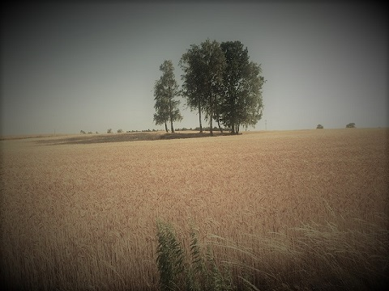

Witaj na naszej stronie
Pierwsze wzmianki o Przygłowie pojawiły się w 1250 roku w dokumentach Klasztoru Cystersów w Sulejowie, których sprowadził do Sulejowa Książę Kazimierz Sprawiedliwy, nadając im na własność wieś Sulejów oraz około 20 okolicznych wsi. Na terenach puszczy nadpilickiej w 1176 r. cystersi umacniali chrześcijaństwo i krzewili nowe sposoby gospodarowania, których umiejętności przywieźli z Francji, skąd pochodzili. Zakon zajmował się uprawą ziemi, hodowlą koni, bydła, świń, bartnictwem, rybołówstwem i łowiectwem bobrów, bardzo licznie żyjących wówczas w rzekach. Wyprawione skórki bobrów były ozdobą strojów magnackich i szlacheckich, toteż stanowiły jeden z ważnych środków płatniczych.

Napisz do nas